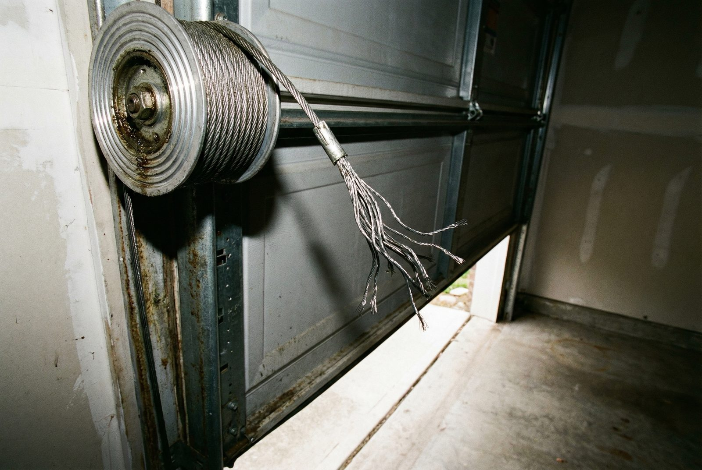
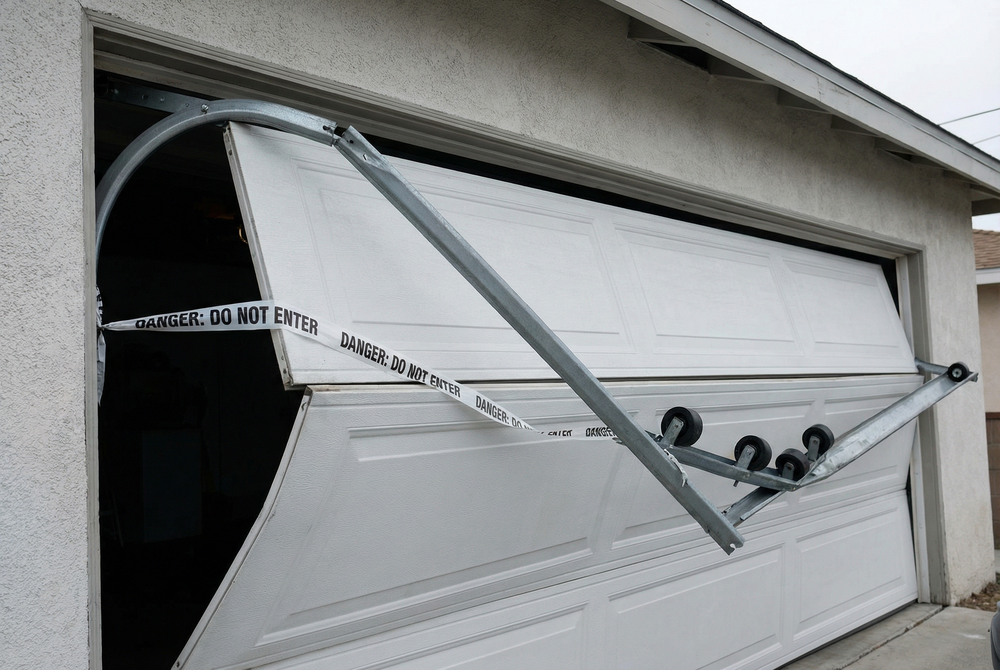

A garage door emergency is not a minor inconvenience — it's a safety and security problem that demands immediate attention. When your door won't close, your home is wide open to anyone who walks down your street. When your door falls off its track or a spring snaps, the door becomes a heavy, unstable structure that poses a serious physical danger to everyone in your household. When your car is trapped inside and you have somewhere to be, every minute counts.
At Gilbert Garage Door Pro, we handle emergency repairs differently than a routine service call. Emergency calls jump to the front of the queue. Our trucks are stocked with the parts that cover the majority of urgent repairs — springs, cables, rollers, and opener components — so we can resolve your problem in a single visit. We typically arrive within 1 to 2 hours of your call, any time of day or night.
Don't wait. Don't try to force it. Call us now at (623) 624-9207 and we will dispatch a technician to your Gilbert home immediately.
Call Now — (623) 624-9207
Gilbert Garage Door Pro — Emergency Dispatch
(623) 624-9207Available 24 hours a day • 7 days a week • No extra charge for nights or weekends
Call for Emergency ServiceNot every garage door issue is an emergency — but some absolutely are. If any of the following describes your situation, call us immediately. These are the scenarios where waiting until a "convenient" appointment time is genuinely not an option.
If your garage door is stuck open or will not close fully, your home is unsecured. An open garage provides direct access to your vehicles, your belongings, and in many homes, a door that leads directly into your living space. This is a security emergency, day or night.
A door that won't open leaves you stranded. Whether you need to get to work, pick up your kids, or reach a medical appointment, being unable to exit your own garage is an urgent problem we treat as a priority dispatch.
A snapped torsion or extension spring brings the entire door system to a halt. The loud bang you heard — like a gunshot from inside the garage — is a broken spring. The door is now essentially immovable without professional assistance. This is our most common emergency call. Learn more about spring repair.
A door that has jumped its tracks is hanging at an angle, grinding metal, or simply not moving properly. An off-track door is unpredictable — it can fall without warning. Keep everyone away from the door until our technician arrives and has it properly realigned and secured.
If a cable snapped and the door dropped, or if the door is visibly sagging on one side and dangling from a single cable, this is a critical safety situation. The door could complete its fall at any time, potentially injuring anyone who walks underneath. Do not approach or attempt to operate the door.
A grinding noise signals stripped gears or a failing motor. A burning smell is more urgent — it can indicate an overheating motor, a shorted circuit board, or in rare cases, a fire risk inside the opener unit. If you smell burning, unplug the opener at the outlet and call us immediately. Learn more about opener repair.
We've built our emergency service around one goal: getting your door fixed as fast as possible. Here's exactly what happens from the moment you call.
Dial (623) 624-9207 any time — 2 PM or 2 AM, weekday or holiday. A real person handles your call and immediately flags it as an emergency.
Your call goes to the front of the queue. The nearest available technician is dispatched to your Gilbert address. No waiting behind scheduled appointments.
Our technicians are strategically positioned across the East Valley. For most Gilbert addresses, we arrive within one to two hours of your call.
Our trucks carry springs, cables, rollers, drums, and common opener components. The vast majority of emergencies are fully resolved in a single visit.
Understanding what's likely wrong — and how we handle it — can ease the anxiety of a garage door crisis. Here are the four most common emergency scenarios we deal with in Gilbert every week.
Torsion springs are the single most common garage door failure, and when they break, everything stops. The spring sits on a steel shaft above the door opening and does most of the heavy lifting every time the door moves. A standard spring has a life cycle of 10,000 to 15,000 open-and-close cycles — roughly 7 to 12 years of typical use. When it breaks, you'll hear a loud bang, and the door will likely refuse to move at all.
Because spring failure is so common, our emergency trucks always carry a full selection of torsion spring sizes to cover single-car and double-car doors. We don't just replace the broken spring — we inspect the entire spring assembly, measure the door weight, and set the proper tension for your specific door. We always recommend replacing springs in pairs: if one broke, the other is equally worn and likely to fail soon. See our full spring repair page for details on what the process involves.
A door that has jumped its tracks is both non-functional and dangerous. This typically happens when a cable breaks or slips off its drum, when the door takes a direct impact (a vehicle backing into it, for example), or when a roller breaks or falls out of the track. Our technician will carefully assess the extent of the misalignment before touching anything. We realign the rollers, re-seat the door in both tracks, inspect the cables and drums, and test every component of the system before calling the job complete. An off-track repair also includes a full inspection of the tracks themselves for bends or obstructions that could cause a repeat failure.

Lift cables run from the bottom corners of the door up to a drum above the opening, working in tandem with the springs to raise and lower the door evenly. When a cable snaps, one side of the door drops, the door goes lopsided, and the opener — if it doesn't stop itself — can cause further damage trying to fight the imbalance. If you notice your door looks crooked, hangs at an angle, or you can see a cable coiled on the floor of your garage, that's a snapped cable.
Replacing a lift cable is not a DIY task. The cable system is under significant tension, works closely with the spring assembly, and requires the proper tools to thread and tension correctly. Our technician will replace the cable, inspect the drum and shaft, check the opposing cable for wear, and balance the door before leaving.
A garage door opener can fail in several ways, not all of which require a full replacement. Our technician will diagnose the issue on-site. The most common culprits are a burned-out motor capacitor (the part that gives the motor its starting burst of power), stripped gears in the drive assembly, a failed logic board, or a power disruption that caused the opener to lose its programming. Most of these are repairable on the spot with the parts we carry. If the motor itself is burned out or the unit is old enough that repair doesn't make financial sense, we can install a replacement opener the same visit.
If the opener is making a grinding or clicking sound, running but not moving the door, or just completely dead, call us for opener repair and we'll diagnose it fast. We also handle sensor issues that can cause the opener to refuse to close the door. For an idea of what emergency repairs typically cost, visit our cost guide — and remember, we never charge extra for after-hours or weekend service.
There are steps you can take right now to protect yourself, your family, and your home while you wait for our technician to arrive. Please read these carefully.
For additional garage door safety guidance, the U.S. Consumer Product Safety Commission (CPSC) publishes safety guides that cover entrapment risks, auto-reverse testing, and other critical safety features every homeowner should understand.
If you've lived in Gilbert for more than a summer, you already know the desert is relentless on mechanical systems. The same forces that make this an amazing place to live put extraordinary stress on your garage door hardware. Several types of emergencies are far more common here than in milder parts of the country, and our technicians see all of them regularly.
Arizona's summer monsoon season brings haboobs, microbursts, and power surges that can knock out electricity for hours at a time. When the power goes out, your opener is dead — and if you don't know how to use the emergency release cord, you may be locked in or out of your own garage. Many homeowners in this situation pull on the emergency release without understanding that the door will need to be reconnected to the opener once power returns. If you're dealing with a storm-related lockout, call us and we'll walk you through it on the phone or dispatch a technician if needed.
This surprises many homeowners: torsion springs snap more frequently in summer, not winter. In a Gilbert garage that hits 130 degrees Fahrenheit by mid-afternoon, the steel in your springs expands and contracts dramatically with every temperature swing. Over time this thermal cycling weakens the metal at the stress points. A spring that was fine in April may snap in July after several weeks of triple-digit days. If you haven't had your springs inspected recently — especially if they're more than seven years old — don't wait for them to break on you at midnight. But if they already have, call us now at (623) 624-9207.
High-wind events — and especially the walls of dust that roll through the East Valley during monsoon season — can drive debris into garage door panels or cause the door itself to rack under wind load. Damaged or buckled panels don't just look bad; a compromised panel can weaken the door's structural integrity, cause it to bind in the tracks, and in severe cases, cause a full panel to fail. We carry common panel sizes in our trucks and can assess storm damage the same day you call. The Town of Gilbert also maintains storm preparedness resources for residents recovering from severe weather events.
We understand that a broken garage door at 11 PM on a Sunday feels completely different from a broken door at 10 AM on a Tuesday. The urgency is the same either way, and so is our response. We are dispatching technicians right now — whether it's a holiday, a weekend, the middle of the night, or the hottest afternoon of the summer.
There are no extra charges for evenings, weekends, or holidays. You pay for the repair — nothing more.
Call (623) 624-9207 NowGilbert Garage Door Pro responds to emergency calls across Gilbert and the entire East Valley. Whether you're in Power Ranch or Queen Creek, our technicians are nearby and en route as soon as you call.

Any situation where your garage door won't close (leaving your home unsecured), your car is trapped inside, or the door is hanging unsafely. Broken springs, snapped cables, and off-track doors are the most common emergencies we handle. If your situation feels urgent, it is — call us at (623) 624-9207.
We prioritize emergency calls and typically arrive within 1–2 hours. Our trucks are stocked with common parts so most emergency repairs are completed in a single visit. We serve all Gilbert neighborhoods and the broader East Valley.
Our repair pricing is the same regardless of when you call. You won't pay extra for evenings, weekends, or holidays. The only cost is the repair itself. We provide a clear estimate before any work begins.
Do not try to force the door. If it's partially open, pull the emergency release cord (the red handle hanging from the opener rail) to disconnect the opener. Keep children and pets away from the door. If your home is unsecured and you're concerned about safety, call the Gilbert Police Department's non-emergency line. Do not attempt to re-seat a cable or roller yourself.
Yes. We're available 24 hours a day, 7 days a week, 365 days a year. Garage door emergencies don't wait for business hours, and neither do we. Call (623) 624-9207 any time.
Call us now — we're dispatching 24/7 at (623) 624-9207
Call (623) 624-9207Brands We Service